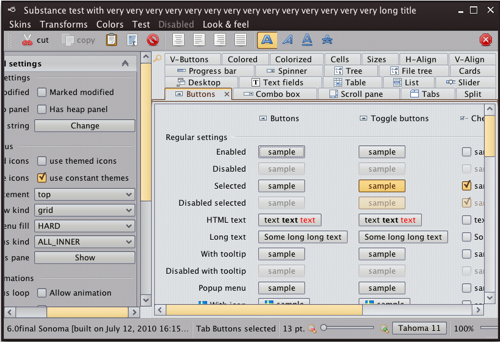
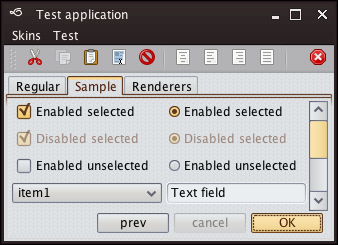
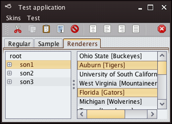
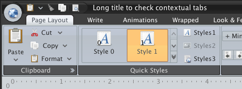
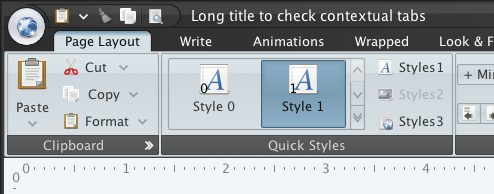
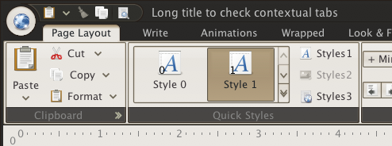
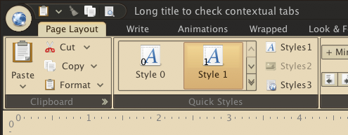
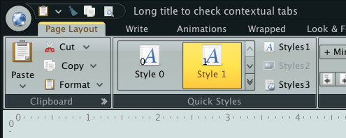
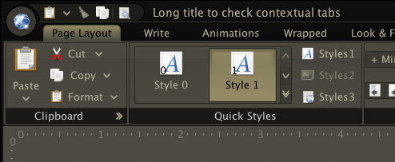
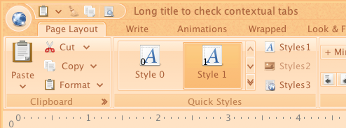

Platform specific keyboard shortcuts
Support for platform-specific keyboard input maps. The new
SubstanceLookAndFeel.setInputMapSet API can be used to
install a set of input maps for all the relevant core Swing controls.
The org.pushingpixels.substance.api.inputmaps.SubstanceInputMapUtilities
class exposes two static methods that follow the look-and-feel related APIs in
the core UIManager class:
InputMapSet getSystemInputMapSet()to get the system specific input map setInputMapSet getCrossPlatformInputMapSet()to get the cross platform input map set
By default you will have the system specific input map set installed - so that you don't need to call the API above if you want to conform to the platform behavioral guidelines. The cross platform input map set provides functionality identical to that of Metal. The system specific input map set provides the following:
- Input map set identical to that of Windows look-and-feel on Windows platforms.
- Input map set identical to that of Gtk look-and-feel on Gnome.
- Input map set almost identical to that of Aqua look-and-feel on Mac. While the keystrokes are the same, the difference is in the actions mapped to the keystrokes. In a small number of cases Aqua UI delegates provide platform-specific implementation of actions that are not found in the basic UI delegates. In this case i tried the keystrokes are mapped to the closest basic action.
- Cross-platform input map set for other platforms.
New Mariner skin
The new Mariner skin is available. To use it in your application, you have the following options:
SubstanceLookAndFeel.setSkin(new MarinerSkin())SubstanceLookAndFeel.setSkin("org.pushingpixels.substance.api.skin.MarinerSkin")-Dswing.defaultlaf=org.pushingpixels.substance.api.skin.SubstanceMarinerLookAndFeelUIManager.setLookAndFeel(new SubstanceMarinerLookAndFeel())UIManager.setLookAndFeel("org.pushingpixels.substance.api.skin.SubstanceMarinerLookAndFeel");
The screenshots below show the Mariner skin in action:
 
New Office Black 2007 skin
The new Office Black 2007 skin completes the collection of skins that can be used on the Flamingo ribbon component. To use it in your ribbon-based application, you have the following options:
SubstanceLookAndFeel.setSkin(new OfficeBlack2007Skin())SubstanceLookAndFeel.setSkin("org.pushingpixels.substance. api.skin.OfficeBlack2007Skin")-Dswing.defaultlaf=org.pushingpixels.substance.api.skin. SubstanceOfficeBlack2007LookAndFeelUIManager.setLookAndFeel(new SubstanceOfficeBlack2007LookAndFeel())UIManager.setLookAndFeel("org.pushingpixels.substance.api. skin.SubstanceOfficeBlack2007LookAndFeel");
Here is a sample ribbon frame under Office Black 2007 skin:
Better integration with Flamingo
While Office Blue 2007, Office Silver 2007 and the new Office Black 2007 skins specifically target the Flamingo ribbon component, the rest of the core Substance skins can be used on the ribbon as well. This release should provide much more polished visuals for the ribbon under all core Substance skins when the matching Substance Flamingo plugin is added to the classpath.
Here is the ribbon under Business Black Steel skin:
And the same ribbon under Dust skin:
And the same ribbon under Dust Coffee skin:
And the same ribbon under Gemini skin:
And the same ribbon under Twilight skin:
The ribbon also looks much better under other Substance skins such as Autumn:
and Business: